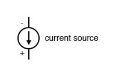
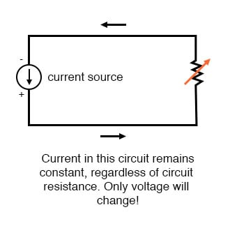
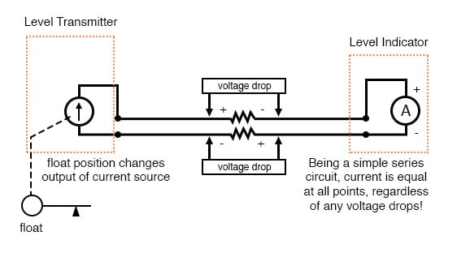
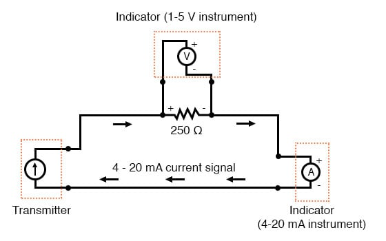

It is possible through the use of electronic amplifiers to design a circuit outputting a constant amount of current rather than a constant amount of voltage. This collection of components is collectively known as a current source, and its symbol looks like this:

A current source generates as much or as little voltage as needed across its leads to produce a constant amount of current through it. This is just the opposite of a voltage source (an ideal battery), which will output as much or as little current as demanded by the external circuit in maintaining its output voltage constant.

Current sources can be built as variable devices, just like voltage sources, and they can be designed to produce very precise amounts of current. If a transmitter device were to be constructed with a variable current source instead of a variable voltage source, we could design an instrumentation signal system based on current instead of voltage:

The internal workings of the transmitter’s current source need not be a concern at this point, only the fact that its output varies in response to changes in the float position, just like the potentiometer setup in the voltage signal system varied voltage output according to float position.
Notice now that the indicator is an ammeter rather than a voltmeter (the scale calibrated in inches, feet, or meters of water in the tank, as always). Because the circuit is a series configuration (accounting for the cable resistances), current will be precisely equal through all components. With or without cable resistance, the current at the indicator is exactly the same as the current at the transmitter, and therefore there is no error incurred as there might be with a voltage signal system. This assurance of zero signal degradation is a decided advantage of current signal systems overvoltage signal systems.
The most common current signal standard in modern use is the 4 to 20 milliamp (4-20 mA) loop, with 4 milliamps representing 0 percent of measurement, 20 milliamps representing 100 percent, 12 milliamps representing 50 percent, and so on. A convenient feature of the 4-20 mA standard is its ease of signal conversion to 1-5 volt indicating instruments. A simple 250-ohm precision resistor connected in series with the circuit will produce 1 volt of drop at 4 milliamps, 5 volts of drop at 20 milliamps, etc:

| Percent of Measurement | 4-20 mA Signal | 1-5 V Signal |
|---|---|---|
| 0 | 4.0 mA | 1.0 V |
| 10 | 5.6 mA | 1.4 V |
| 20 | 7.2 mA | 1.8 V |
| 25 | 8.0 mA | 2.0 V |
| 30 | 8.8 mA | 2.2 V |
| 40 | 10.4 mA | 2.6 V |
| 50 | 12.0 mA | 3.0 V |
| 60 | 13.6 mA | 3.4 V |
| 70 | 15.2 mA | 3.8 V |
| 75 | 16.0 mA | 4.0 V |
| 80 | 16.8 mA | 4.2 V |
| 90 | 18.4 mA | 4.6 V |
| 100 | 20.0 mA | 5.0 V |
The current loop scale of 4-20 milliamps has not always been the standard for current instruments: for a while, there was also a 10-50 milliamp standard, but that standard has since been obsoleted. One reason for the eventual supremacy of the 4-20 milliamp loop was safety: with lower circuit voltages and lower current levels than in 10-50 mA system designs, there was less chance for personal shock injury and/or the generation of sparks capable of igniting flammable atmospheres in certain industrial environments.
REVIEW: